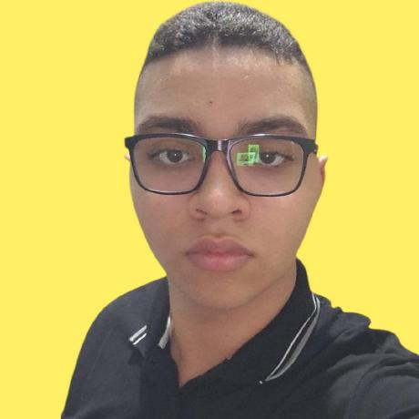

Pedro Alves da Silva
Desenvolvedor FullStack
Conecte-se comigo😊
![A imagem mostra o logotipo do LinkedIn. É composto por um quadrado arredondado preenchido com um tom vibrante de azul. No centro deste quadrado, destacam-se as letras minúsculas 'i' e 'n' em branco puro, formando a palavra 'in'. As letras são desenhadas em um estilo simples, com traços grossos e uniformes, sem serifas, e estão bem próximas uma da outra. Ao lado direito deste Ãcone azul, aparece a palavra 'LinkedIn' escrita por extenso. A parte 'Linked' está em preto, e a parte 'in' que a segue, embora idêntica à do Ãcone azul, também está em preto, mantendo o mesmo estilo de letra moderno e arredondado. O contraste entre o azul e o branco no Ãcone, e entre o preto do texto e o fundo, facilita a leitura e a identificação. O design geral transmite uma imagem de profissionalismo, modernidade e conectividade.](img/linkedin.png)
![Ele é conhecido como 'Octocat' e consiste na silhueta de uma criatura imaginária, que é uma fusão entre um gato e um polvo. A figura inteira é preenchida com uma única cor sólida, geralmente preta ou branca, destacando-se contra o fundo. A cabeça tem o formato arredondado de um gato doméstico, com duas orelhas pontudas e triangulares no topo. No lugar do corpo e das patas de um gato, emergem da parte de baixo da cabeça cinco tentáculos grossos e curvos, como os de um polvo. Um desses tentáculos se estende para a esquerda e se curva para cima, enquanto os outros quatro se espalham em um arco para a direita e para baixo. Não há detalhes como olhos ou boca na silhueta principal; é apenas a forma sólida deste ser hÃbrido, criando uma imagem icônica, simples e facilmente reconhecÃvel que combina a familiaridade de um gato com a natureza multifacetada e conectada de um polvo](img/github.svg)